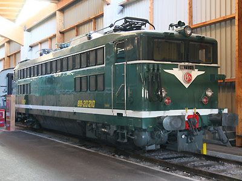
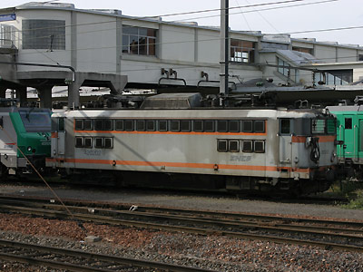

BB 20200
Danseuse passe-frontières
Les BB 20200 sont des machines bifréquence, semblables mécaniquement aux "Danseuses" BB 17000, aptes à circuler sous le 25kV 50Hz français et le 15kV 16,7Hz Suisse ou Allemand, produites à treize exemplaires.
Destinées à remplacer les prototypes BB 20100 (BB MTE) et les machines de manoeuvre C 20150 (semblables aux Ee 3/3 CFF), elles entrent en service en 1970. Les 20100 sont alors radiées et les 20150 revendues aux CFF.
En raison de leur faible nombre et de leur puissance modeste, les 20200 n'assuraient que des trains passe-frontières de marchandises entre triages sur les jonctions Strasbourg / Kehl et Mulhouse / Bâle. Les relations voyageurs frontalière étant plutôt assurées par des BR 181.2 DB, des automoteurs diésels, des TGV SE tricourant ou bien des automotrices CFF bifréquence.
Les 20200 ont été radiées entre 2003 et 2006 poussées à la retraite par les BB 37000 SNCF et les BR 185 DB.
Les Livrées
Les 20200 ont connu les mêmes livrées que les BB 25500. Vert foncé à bande blanche, puis béton à bande orange. Ces machines se distinguaient par un troisième phare.
Quelques données techniques
Constructeur : Alsthom
Tension d'alimentation : monophasé 25 kV, 50 Hz ou 15kV 16,7Hz.
Chaîne de traction : Graduateur, redresseur à diodes
Motorisation : 2 moteurs à courant redressé par bogie
Puissance sous 25kV 50Hz : 2940 kW
Puissance sous 15kV 16,7Hz : 1660 kW
Longueur : 14,94m
Masse : 80t
Pantographes : 2 AM18 U
Pour plus d'info :
La fiche BB 20200 sur Wikipedia
L'inventaire des BB 20200 sur Trains du Sud-Ouest

La BB 20210 repeinte en livrée d'origine à la Cité du Train - Mulhouse (04/10/2009)

Ca sent la fin pour la BB 20202 entourée de BB 37000 - Mulhouse (23/10/2004)